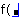
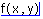
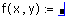

Defining a Function |
A function is a mathematical relationship between a set of arguments and a numerical result. The arguments are the variables that appear between the parentheses you use to define or evaluate a function.
| Discussion and Example |
To define a function:
Type the function name followed by a left parenthesis. A placeholder appears.

Type a list of arguments separated by commas followed by a right parenthesis.

Type [:] to see the definition symbol, :=. Another placeholder appears.

Type an expression or a string in the placeholder.
f(x,y) := x + sin(y)
Make sure any variables used in the right-hand expression are either:
part of the argument list.
If a variable in the right-hand expression doesn't satisfy one of these conditions, it appears in red as undefined.
A function may also be defined by assigning the name of the new function without an argument list to an expression that evaluates to a function. For example, a direct reassignment of function names is allowed:
sin1 := sin
if you wish to create a copy of a function. You can also use this technique to extract functions from Solve Blocks. For example, the results of Odesolve are a function in terms of the independent variable. You use the output of ODE solve blocks by assigning this output to a function name without an argument list. The function name is then evaluated with the arguments.
| Function Type Signature |
Most functions, once defined, have type signatures. Type signatures specify, in programmatic terms, the domain and range of the function. Mathcad uses the signature when error checking the function. The signature identifies two sets of information:
To see the type signature of any function, either built-in or defined in the worksheet, type the function name and press [=] to evaluate it.
dist(x,v) := 3·x + v·sec
dist = f(any, any · Time^-1) → any
What this says is:
If square brackets appear around a dimensional signature, for example [Force], this means that the argument or result is an array. If the word "Unitless" appears, it means a unitless value.
Type notation is different from evaluating the function for particular arguments. The type signature only tells the required types of the expressions in the function, not their values in a particular case. A function is not evaluated until you use it in the worksheet. Type signatures can be inspected in order to know how to use a function, particularly with respect to what dimensions are accepted by the function. The type signature also tells you whether you've defined a function in the way you meant.
Mathcad verifies the type and unit-balancing of functions when they are defined, which allows you to verify the dimensional and type-correctness of your calculations before even evaluating them. This type of dimensional checking places the following restriction on expressions: the dimensions of the output must depend only on the dimensions of the inputs, and not on their particular values. It is for this reason that you cannot raise a dimensioned value to a variable power in Mathcad, for example. It also means that you cannot return different dimensions from a function based on the value of the inputs (no switching on dimensions).
Function definitions that depend on a function of the same name (name appears on both the right- and left-hand sides of the definition) define the function in the following priority:
If no previous definition is found, then the function is considered recursive.
So, if you define
sin(x):= sin(x*π/180)
you change the value of the sin function for the worksheet, and if you define
f(x):= x/2 then f(x):= f(x) + 1
the second definition of f is based on the first. If you define a function in terms of itself and there is no previous definition, Mathcad treats it recursively. If the recursion never ends, Mathcad detects the infinite loop and shows an error message. You can either choose different names for functions on either side of a definition, or use the namespace feature to clarify which version of a function you mean.